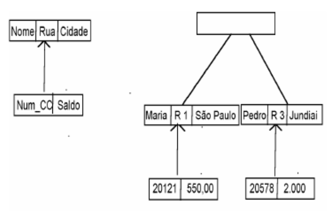
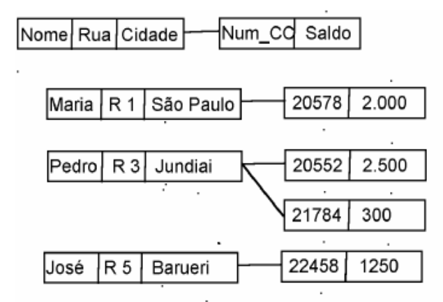
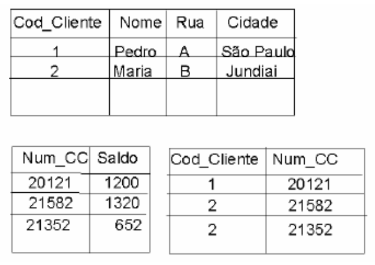

• A modelagem de dados é uma técnica utilizada para:
• Conhecer melhor o contexto de negócio.
• Retratar os dados que suportam esse contexto de negócio.
• Projetar o banco de dados.
• Promover o compartilhamento dos dados e a integração dos
sistemas por meio da reutilização de estruturas de dados comuns.
• Contribuir para que a perspectiva da organização a respeito dos
seus dados seja unificada.
• Modelo hierárquico
• Modelo em rede
• Modelo relacional
• Modelo orientado a objeto
• Primeiro a ser reconhecido como um modelo de dados.
• Representação hierárquica das informações.
• Dados são estruturados em árvores ou hierarquias.
• Cada nó da árvore corresponde à ocorrência de registros
(coleção de campos).
• Registro-pai e registros-filhos.
• Ligação – associação entre 2 registros.
• Sistema comercial: IMS (Information Management System) da IBM.
• Exemplo de estrutura do modelo hierárquico
• Conta corrente – endereço

• Extensão ao modelo hierárquico.
• Eliminou a hierarquia
• Um registro pode estar envolvido em várias associações
• Representado graficamente por grafos.
• Padronizado pela CODASYL (Conference on Data Systems
Languages)
• Exemplo de estrutura do modelo em rede
• Conta corrente – endereço

• Surgiu para Aumentar a independência dos dados
e prover um conjunto de funções para armazenamento e
recuperação de dados
• Criado por Edgar Codd, em 1970, tendo como base a
teoria dos conjuntos e a álgebra relacional
• Flexível e adequado para solucionar vários problemas na
concepção e implementação da base de dados
• Estrutura fundamental: relação (tabela)
• Relação é constituída por um ou mais atributos (campos)
• Exemplo de tabelas do modelo relacional
• Conta corrente / cliente

• Comercialmente viável em meados de 1980.
• Surgimento motivado em função dos limites de
armazenamento e representação semântica impostas no
modelo relacional
• Ex: sistemas de informações geográficas
(tipos complexos de dados)
• Uso de linguagens de programação orientadas a objetos.
• Atualmente, usados em aplicações especializadas
• Representados por diagramas de classes UML (Unified
Modeling Language)
• Exemplo de diagrama de classes UML
• Conta corrente – endereço
• Chave primária (primary key): Campo que identifica
de forma única uma tupla ou registro da
tabela.
Por exemplo: campo RA da tabela Aluno.
• Chave estrangeira (foreign key): Campo que se refere
à chave primária de uma outra tabela.
Por exemplo: campo Empresa de interesse da tabela Aluno,
que contém o código da empresa (chave primária
da tabela Empresa).
• Valor NULL: Quando um determinado campo,
para um registro (linha) não tem nenhum valor,
ele recebe o valor NULL.
• DDL (relacionado à linguagem SQL): Data Definition
Language – grupo de instruções do SQL para criar
tabelas, alterar a estrutura das tabelas ou eliminar tabelas.
Ou instruções CREATE, ALTER, DROP.
• DML (relacionado à linguagem SQL): Data Manipulation
Language – grupo de instruções do SQL para manipular as
tabelas, ou seja, para inserir dados, atualizar os dados,
excluir dados, consultar dados
• Instruções INSERT, UPDATE, DELETE, SELECT
• DCL (relacionado à linguagem SQL): Data Control
Language - lidam principalmente com os direitos,
permissões e outros controles do sistema de banco de dados.
- GRANT - concede privilégios de acesso do usuário ao banco de dados.
- REVOKE - retira os privilégios de acesso do usuário dados usando o
comando GRANT.